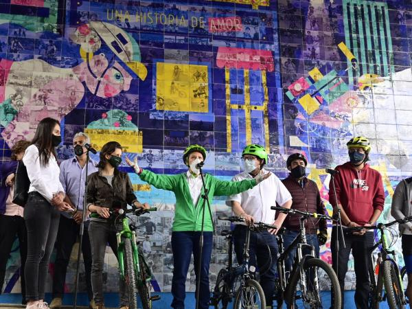

Noticia de ejemplo 1: El mural que cuenta una historia de amor por la bicicleta
Por: Ana Puentes, 02 de octubre 2020
Bajo lo que era el gris y solitario puente de la calle 39 con carrera 5, en el parque Nacional, un grupo de artistas urbanos creó dos murales de gran formato que cuenta esa historia de amor que hay entre Bogotá y la bicicleta.
Quien pase por allí no solo se encontrará en la paredes con una bicimensajera, una ciclista deportiva, una ciclista aficionada, un hombre que lleva a su perro en una cargo bike, dos jóvenes que van rumbo a su trabajo a todo pedal y otro más que lleva su candado de seguridad, sino las imágenes de más de 540 bogotanos con sus bicicletas.
Son 540 de las más de 1.500 fotos que los ciudadanos enviaron a la Secretaría de Movilidad en una convocatoria de esta entidad. En ese enorme collage, sobre el que se imprimió el diseño de A Tres Manos, hay fotos de hombres, mujeres, niños de ‘Al Colegio en bici’ e, incluso, de la alcaldesa Claudia López y de la gerente de la bicicleta, Laura Bahamón, en su matrimonio, subida en una bicicleta.

“La idea era apropiarnos de un espacio que era de paso de muchos ciclistas por ser esa subida antes de El Verjón. Quisimos darle vida por medio de una intervención artística”, comenta Andrés Contento, jefe de la oficina de comunicaciones de la Secretaría de Movilidad y quien estuvo al frente del grupo de redes, diseñadores gráficos y productores que convocaron a Bogotá para que enviara sus imágenes, que, con ayuda del Instituto de Participación, contactaron al estudio de arte urbano A Tres Manos y combinaron el diseño del mural de los artistas con las fotos.
“Se tuvo que sentar un diseñador a escoger foto por foto, mirando en los temas de color dónde iba a mejor ubicada para que diera mejor el efectos”, explica Contento. Y, mientras en la Secretaría avanzaban con el montaje, bajo el puente trabajaban Ceroker, Mugre Diamante y Deimos, los tres integrantes de A Tres Manos, un estudio que lleva ocho años plasmando murales en calles, fachadas, negocios y casas.
“Siempre hemos creído que el arte urbano y el grafiti, por medio del color, pueden resignificar espacios. Este mural de gran formato en aerosol y el otro en técnica digital con las 500 fotos están inspirados en todo lo que representa la bici, ya sea como medio de transporte, la alegría de pedalear. Nos gustó fusionar dos cosas que sabemos que son íconos en Bogotá: el grafiti y la bicicleta”, dice Ceroker, artista urbano hace 17 años.
Para hacer esta intervención, primero abocetaron y digitalizaron el diseño para luego llegar a trabajar. “La idea era incluir varios personajes, y entre ellos quise resaltar la cuota femenina. Hice la representación de una chica ciclista y de una bicimensajera, es mostrar que la bici funciona como medio de trabajo y para cualquier tipo de persona”, dice Mugre Diamante, artista visual manizaleña, delante del mural ante el cual, por estos días, ciclistas, motociclistas y conductores bajan la velocidad para darle un vistazo.
Y en los laterales, Deimos, artista hace 13 años, plasmó palabras y frases alusivas a la bicicleta. “Era vincular todo el tema bici para generar recordación y hacer énfasis en que necesitamos un espacio para todos. La bici es una ‘chimba’ para cambiar los hábitos de las personas y es la libertad de moverse donde uno quiere y como quiera en Bogotá”, anota Deimos